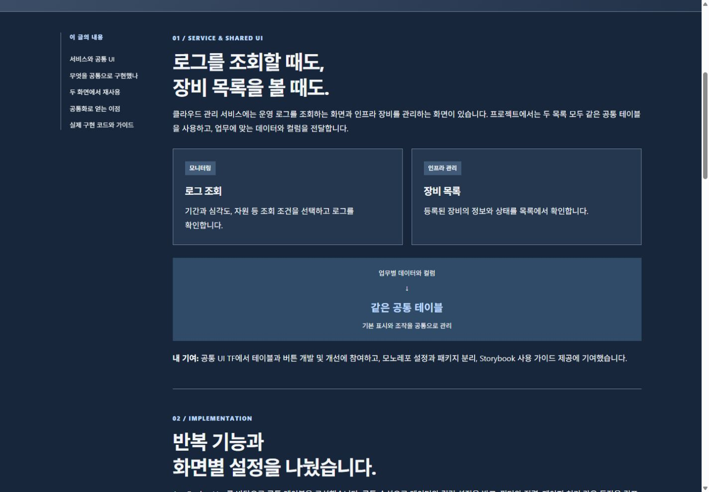

01 / Featured project
공통 UI
함께 쓰는 화면의 기준을 만들다
여러 업무 화면에서 반복되던 테이블과 버튼을 공통 UI로 정리했습니다. 사용 방법과 사례를 한눈에 확인할 수 있도록 문서와 스토리를 구성했습니다.
사례 자세히 보기 ↗권현성은 여러 사람이 함께 쓰는 화면을 정리합니다.
공통 UI부터 운영 화면과 테스트 도구까지,
만드는 과정과 근거를 보여드립니다.

프로젝트마다 실제 화면을 먼저 보여주고, 맡은 역할과 문제 해결의 근거를 짧게 정리합니다.

여러 업무 화면에서 반복되던 테이블과 버튼을 공통 UI로 정리했습니다. 사용 방법과 사례를 한눈에 확인할 수 있도록 문서와 스토리를 구성했습니다.
사례 자세히 보기 ↗기술 이름을 나열하기보다, 어디에 적용했고 무엇을 개선했는지 보여드립니다.
관련 자격은 간결하게 정리해 경력과 프로젝트를 읽는 흐름을 이어갑니다.